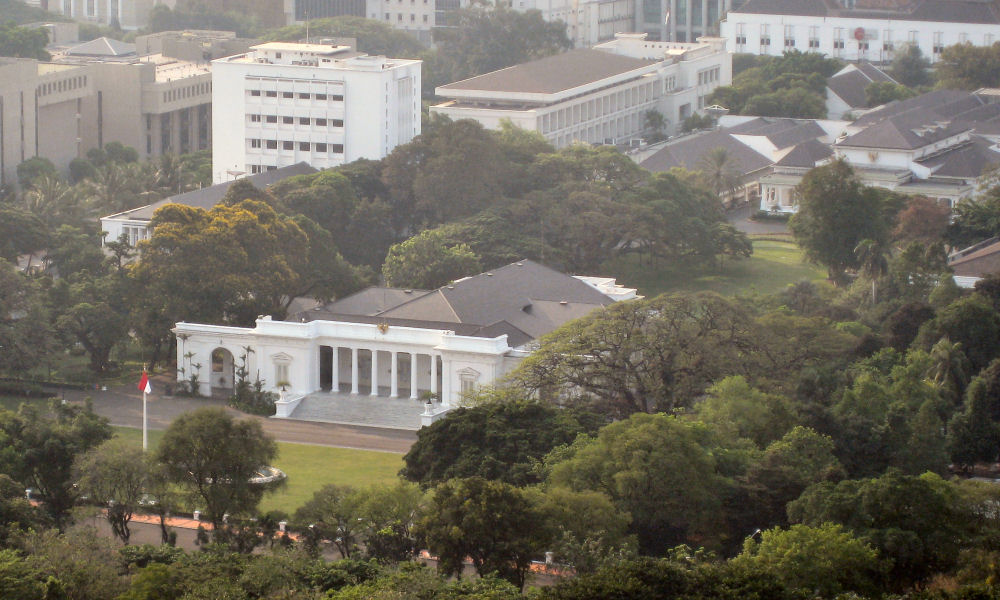
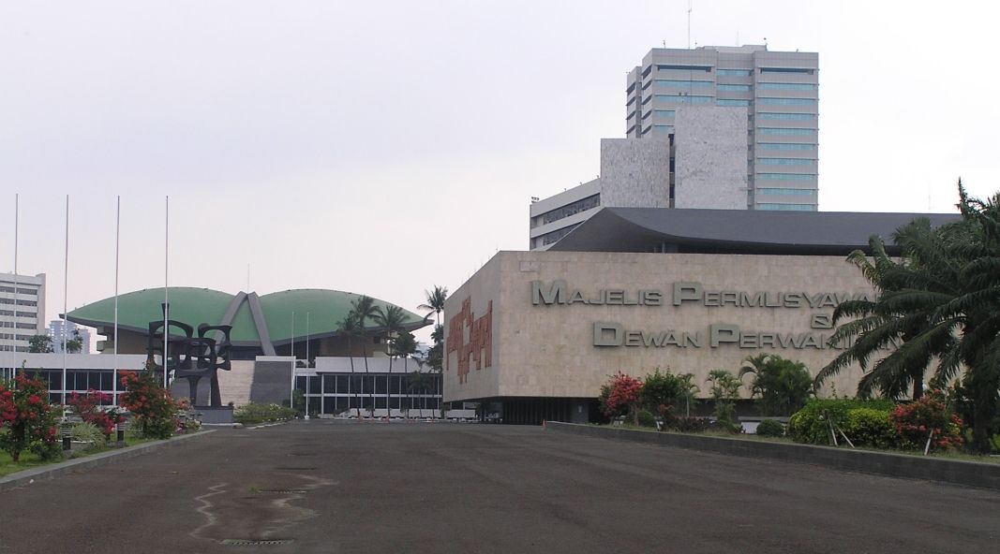

Gibran trending karena kabar pengunduran dirinya dari jabatan Wakil Presiden makin ramai pada Kamis, 12 November 2026. Ketua Umum Projo Budi Arie Setiadi membenarkan Gibran sudah menyerahkan surat pengunduran diri kepada Presiden Prabowo Subianto pada Rabu, 11 November 2026.
Kabar ini tidak muncul tiba-tiba. Sehari sebelumnya, Selasa 10 November 2026, Gibran bertemu Prabowo di Istana Kepresidenan selama sekitar 2,5 jam dan menyampaikan niat mengundurkan diri. Menteri Sekretaris Negara Prasetyo Hadi membenarkan pertemuan itu dan menegaskan Prabowo tidak menolak niat tersebut. Gibran sendiri bilang ia tidak ingin dinamika yang terjadi menjadi polemik politik berkepanjangan. Akar masalahnya ada di dokumen pendidikan: Mahkamah Konstitusi pada 6 Oktober 2026 menyatakan tidak menemukan bukti meyakinkan bahwa Gibran menamatkan pendidikan setingkat SMA, lalu Mahkamah Agung pada 30 Oktober 2026 menyatakan surat keterangan penyetaraan SMA miliknya tidak sah. Sampai Rabu malam, Istana belum mengeluarkan konfirmasi resmi dan Ketua MPR Ahmad Muzani mengaku belum melihat suratnya. Jadi statusnya per Kamis pagi ini: pengunduran diri sudah dibenarkan orang dekat Gibran, tapi proses resminya belum selesai. Artikel ini memisahkan mana yang sudah terkonfirmasi dan mana yang masih kabar, supaya kamu tidak ikut menyebar info yang belum jelas.
Apa yang sudah terkonfirmasi soal kabar Gibran mundur?
Pertemuan Selasa pagi itu jadi titik awalnya. Menteri Sekretaris Negara Prasetyo Hadi membenarkan Gibran menyampaikan niat mengundurkan diri di tengah pembicaraan yang berlangsung sekitar 2,5 jam. Prasetyo juga membantah kabar bahwa Prabowo menolak niat tersebut. Menurutnya, Presiden justru memberi sejumlah saran.
Gibran sendiri menceritakan dua saran itu kepada wartawan. Pertama, berkoordinasi dengan Kementerian Pendidikan Dasar dan Menengah untuk mengajukan peninjauan kembali di Mahkamah Agung. Kedua, tetap berjuang di Pengadilan Tata Usaha Negara dengan menghadirkan seluruh dokumen pendidikan, dari SD sampai S1. Ia juga meminta kesempatan membuktikan keabsahan dokumennya lewat jalur hukum.
Sehari kemudian, Rabu 11 November 2026, kabar itu naik satu tingkat. Ketua Umum Projo Budi Arie Setiadi membenarkan kepada Reuters bahwa Gibran sudah menyerahkan surat pengunduran diri kepada Prabowo di Lanud Halim Perdanakusuma, Jakarta. Prabowo tiba di sana seusai kunjungan kerja di Aceh. Gibran sendiri sudah menjabat hampir 25 bulan sejak dilantik pada Oktober 2024 sebagai Wakil Presiden ke-14.

Foto: MichaelJLowe, CC BY-SA 3.0, via Wikimedia Commons
Kenapa Gibran mundur? Akar masalahnya ada di dokumen pendidikan
Semua bermula dari selembar surat keterangan penyetaraan pendidikan setingkat SMA yang dipakai Gibran sebagai syarat pencalonan wakil presiden pada Pemilu 2024. Surat itu diterbitkan Direktorat Pendidikan Dasar dan Menengah Kementerian Pendidikan dan Kebudayaan pada 2019, dan keabsahannya digugat ke pengadilan.
Pada 6 Oktober 2026, Mahkamah Konstitusi memutus perkara Nomor 01/PHPU.PRES-XXIV/2026. MK menyatakan tidak menemukan bukti yang meyakinkan, termasuk keberadaan fisik ijazah, bahwa Gibran telah menyelesaikan pendidikan setingkat SMA. Tiga pekan kemudian, pada 30 Oktober 2026, Mahkamah Agung memutus kasasi Nomor 742 K/TUN/2026 yang diajukan HM Subhan Palal. Majelis hakim mengabulkan gugatan dan menyatakan Surat Keterangan Nomor 9149/D.D1/KS/2019 tidak sah dan batal demi hukum.
Tekanan politik lalu bergerak ke parlemen. Sebanyak 120 anggota DPR mengajukan usul Hak Menyatakan Pendapat sebagai pintu masuk proses pemakzulan, dan Fraksi PAN di MPR meminta Gibran mundur secara sukarela. Gibran menanggapinya dengan satu kalimat: ia tidak ingin dinamika yang terjadi menjadi polemik politik berkepanjangan.
Apa yang terjadi selanjutnya kalau suratnya resmi diterima?
Pengunduran diri seorang wakil presiden tidak langsung membuat kursinya kosong. Menurut penjelasan Menteri Koordinator Bidang Hukum Yusril Ihza Mahendra, surat pengunduran diri harus disampaikan ke MPR, lalu MPR bersidang untuk menyatakan kekosongan jabatan. Setelah itu Presiden mengajukan dua nama calon pengganti, dan MPR memilih salah satunya paling lambat 60 hari. Aturan ini tertulis di Pasal 8 ayat 2 Undang-Undang Dasar 1945.
Sampai Rabu malam, proses itu belum berjalan. Ketua MPR Ahmad Muzani mengaku belum mendengar apalagi melihat surat pengunduran diri tersebut, dan pimpinan MPR belum bisa mengambil langkah kelembagaan. Artinya, per Kamis pagi ini Gibran masih menjabat sebagai Wakil Presiden, dan Yusril menegaskan belum terjadi kekosongan jabatan.

Kenapa warganet malah bercanda soal one month notice?
Di tengah kabar yang masih simpang siur, linimasa justru dipenuhi candaan. Kata kunci Gibran menempati posisi keempat trending topic X Indonesia sekitar pukul 06.34 WIB pada Kamis, 12 November 2026. Banyak warganet mengaitkan kabar ini dengan istilah one month notice, pemberitahuan pengunduran diri satu bulan sebelumnya yang biasa berlaku di dunia kerja.
Akun-akun di X menyindir proses administrasi yang biasanya harus diselesaikan karyawan ketika mengundurkan diri, dari pengembalian laptop dan kartu identitas sampai penyelesaian urusan keuangan dan perjalanan dinas. Ada juga yang mempertanyakan apakah ketentuan one month notice juga berlaku bagi seorang wakil presiden, plus candaan soal serah terima pekerjaan dan perhitungan gaji proporsional.
Aktivitas media sosial Gibran sendiri ikut disorot. Akun Instagram @gibran_rakabuming mengunggah 26 video Reels dalam satu malam, berisi dokumentasi berbagai kegiatan selama menjabat, dari pertemuan dan kunjungan kerja ke berbagai daerah sampai kegiatan di bidang pendidikan, pertanian, dan kemasyarakatan. Sebagian warganet menyampaikan dukungan, sebagian lain mempertanyakan kenapa dokumentasi sebanyak itu diunggah berdekatan.
Apa yang masih kabar dan belum bisa dipercaya?
Pertama, jadwal penyerahan surat ke MPR pada Kamis, 12 November 2026 sekitar pukul 10.00 WIB. Informasi ini beredar dari sumber di lingkaran Gibran, tapi belum ada konfirmasi dari MPR maupun Istana. Kedua, kabar bahwa Gibran akan mengumumkan pengunduran diri di Istana Bogor pada Kamis pagi. Sumbernya tidak disebutkan namanya, dan ada dua versi soal waktu dan lokasi penyerahan surat.
Ketiga, sidang paripurna DPR yang dijadwalkan Kamis pagi untuk membahas usul Hak Menyatakan Pendapat. Sidangnya memang dijadwalkan, tapi apa yang benar-benar dibahas dan diputuskan baru ketahuan sesudah sidang selesai. Jadi kalau kamu melihat tangkapan layar yang mengklaim suratnya sudah diterima MPR, cek dulu sumbernya. Sampai ada pernyataan resmi dari Istana atau MPR, status Gibran masih wakil presiden yang sedang dalam proses mengundurkan diri.
Kabar Gibran mundur ini masih bergerak cepat, dan detailnya bisa berubah dalam hitungan jam. Yang jelas, nama Gibran trending bukan karena gosip kosong, melainkan karena rangkaian putusan pengadilan, pertemuan di Istana, dan konfirmasi dari orang dekatnya. Pantau pernyataan resmi Istana dan MPR hari ini sebelum menyimpulkan apa pun.
Baca juga: Kenapa Frans Seda Trending, Demo 28 Oktober di Bundaran HI, atau lihat daftar lengkap artikel Other dan artikel riset di blog.
Sumber dan Info Resmi
Fakta dan langkah di artikel ini merujuk ke sumber berikut:
- Faktual Indonesia: kata kunci Gibran posisi keempat trending topic X Indonesia sekitar pukul 06.34 WIB 12 November 2026; Budi Arie membenarkan penyerahan surat 11 November 2026; 26 video Reels dalam satu malam; candaan one month notice.
- Telegraf: pertemuan 10 November 2026 selama 2,5 jam; Prasetyo Hadi membenarkan niat mundur dan membantah penolakan Prabowo; Muzani belum melihat surat; prosedur MPR menurut Yusril; jadwal penyerahan surat ke MPR 12 November sekitar pukul 10.00 WIB dan sidang paripurna DPR soal HMP; MK 6 Oktober 2026 perkara 01/PHPU.PRES-XXIV/2026; MA 30 Oktober 2026 kasasi 742 K/TUN/2026; Surat Keterangan 9149/D.D1/KS/2019 tidak sah; 120 anggota DPR mengajukan usul HMP; Fraksi PAN di MPR meminta Gibran mundur; Gibran Wakil Presiden ke-14, dilantik Oktober 2024.
- Metro Timor News: pemberitaan Reuters dan BBC soal kabar pengunduran diri; Pasal 8 ayat 2 Undang-Undang Dasar 1945.
- Klik Fakta: Prasetyo Hadi membenarkan niat mundur; Yusril menegaskan belum terjadi kekosongan jabatan.
- Demokratis: pertemuan 2,5 jam; dorongan Hak Menyatakan Pendapat di DPR.
- Channel9: kabar pengumuman resmi di Istana Bogor pada Kamis pagi; dua versi soal waktu dan lokasi penyerahan surat.